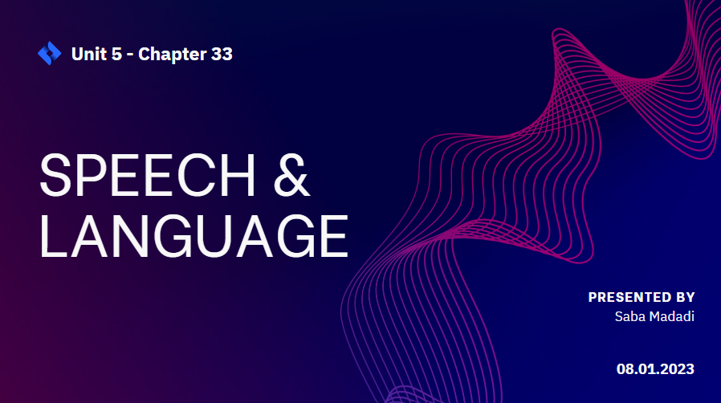
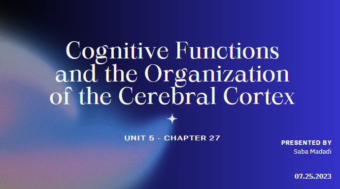
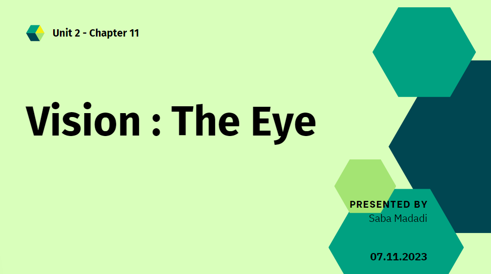
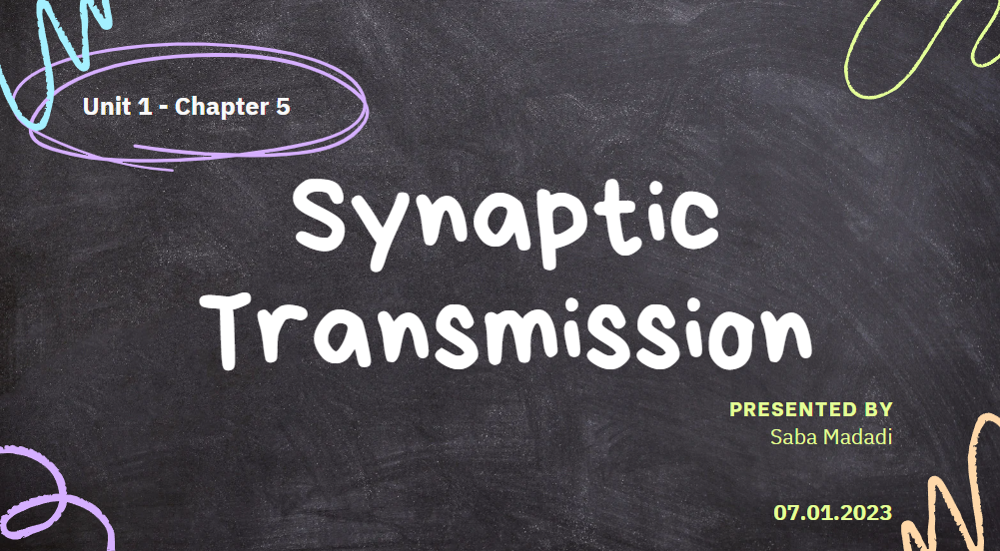
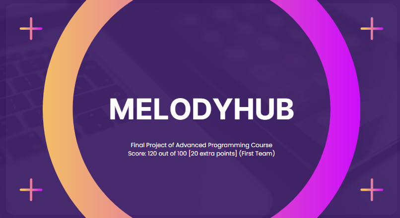
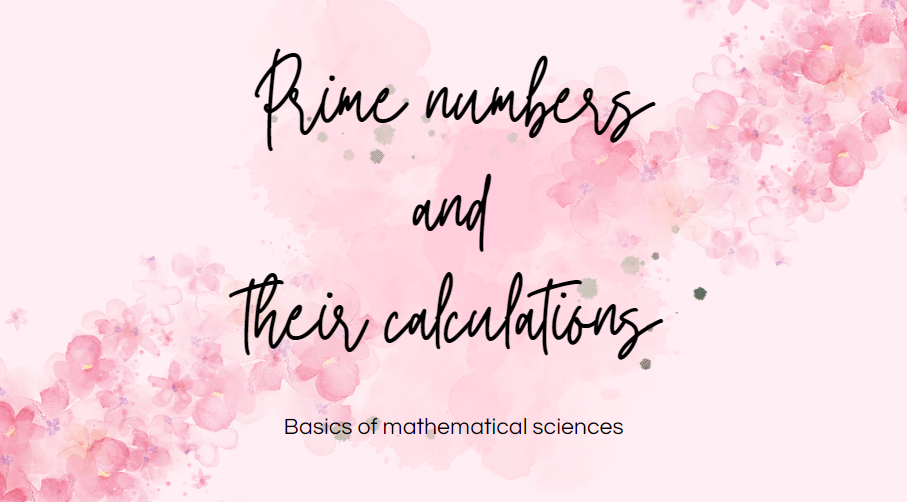

November 25, 2023
The Millennium Prize Problems ↗
My ESP course presentation.

Earlier presentations, programming projects, and notes from my previous website.
These posts are preserved as an archive. Titles link to their original presentations, repositories, or external pages.
My ESP course presentation.
A platform for showing appreciation to people who share information freely.
A collection of programming projects inspired by popular applications.
Programming projects inspired by classic games.
A small milestone from experimenting with graphic design on Canva.

Presentation based on Unit V, Complex Brain Functions and Cognitive Neuroscience, in Neuroscience (6th edition) by Dale Purves and colleagues.

Presentation based on Unit V, Complex Brain Functions and Cognitive Neuroscience, in Neuroscience (6th edition) by Dale Purves and colleagues.

Presentation based on Unit II, Sensation and Sensory Processing, in Neuroscience (6th edition) by Dale Purves and colleagues.

Presentation based on Unit I, Neural Signaling, in Neuroscience (6th edition) by Dale Purves and colleagues.

A digital music streaming service project for songs, podcasts, and other audio content.

Presentation based on Basics of Mathematical Sciences by Mohammad Mehdi Ebrahimi and Mojgan Mahmoudi.
